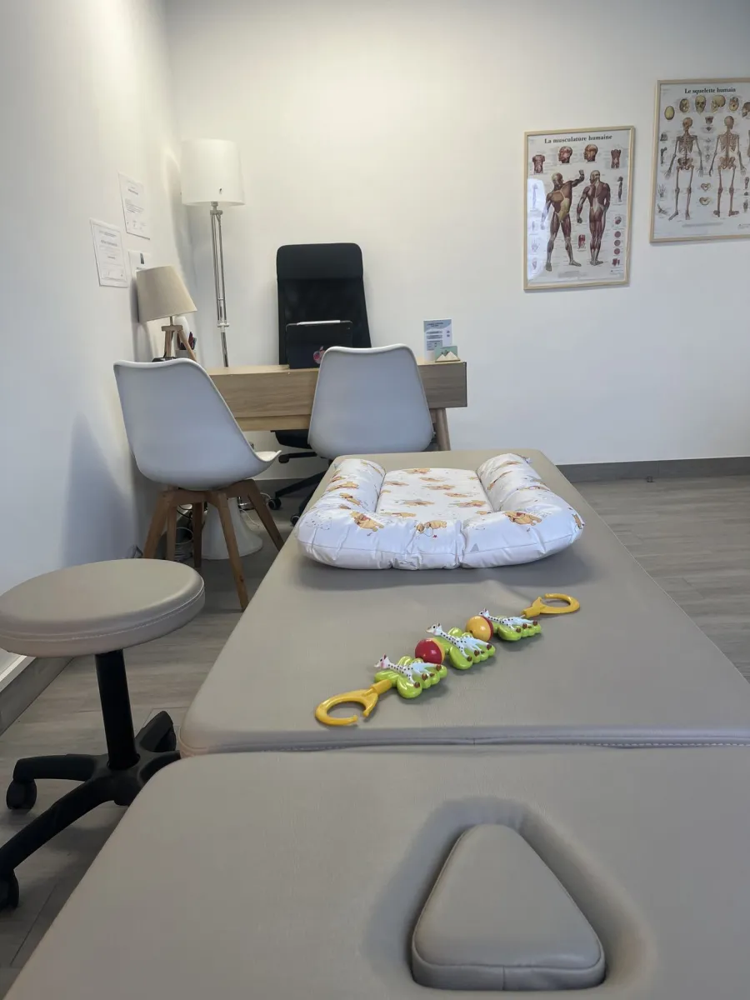

Je suis spécialisée en périnatalité, j'accompagne les nouveaux-nés dans leurs premières années de vie.

Ostéopathe D.O. à Meudon, j'accompagne les femmes et leurs bébés, de la grossesse aux premières années de vie.
Chaque consultation commence par un échange attentif afin de comprendre les besoins de votre petit bout, le déroulé de l'accouchement et les gênes du quotidien.
Mon objectif est de soulager efficacement votre bébé et de vous donner les conseils appropriés à sa situation pour la maison.
Pour soulager les tensions liées à la naissance, notamment en cas d'utilisation d'instruments tels que les forceps, ce bilan permet d'accompagner le nourrisson dans les premières semaines de vie.
Il aide à faire le point sur différents aspects : qualité du sommeil, alimentation et succion, éventuelles déformations crâniennes, phases d'éveil et développement moteur.
L'objectif est de favoriser un meilleur confort global du bébé et de soutenir un développement harmonieux dès les premiers mois. L'ostéopathie ne remplace pas le suivi pédiatrique régulier.
Une prise en charge précoce permet d'accompagner les déformations du crâne du nourrisson, souvent liées à une position préférentielle ou à des tensions cervicales.
Des conseils de positionnement, d'installation et un suivi adapté peuvent aider à favoriser un développement harmonieux3.
Le bébé peut présenter une difficulté à tourner la tête d'un côté ou une préférence de position.
Un accompagnement adapté permet de relâcher les tensions, d'améliorer la mobilité cervicale et de prévenir l'apparition de déformations crâniennes associées4.
Les reflux peuvent provoquer inconfort, pleurs, agitation après les repas ou troubles du sommeil.
La prise en charge vise à diminuer les tensions pouvant participer à ces symptômes et à améliorer le confort du bébé au quotidien.5
Liste non exhaustive — n'hésitez pas à me contacter pour toute question.
Références
Prenez rendez-vous en quelques secondes sur Doctolib.
Prendre RDV en ligne56–60 Rue Henri Barbusse, 92190 Meudon